PARE / THRESHOLD
Moko See, Moko Do
A digital whare that breathes with you — every cut, every light, every motion leaving a trace in the ledger.
GATE 1 / TE KAUAE O NGAHAKA
The breathing mirror
Stand. Breathe. Let the wall answer.
Warming the mirror…
Hint: be still for a while. Mataora reveals himself to those who wait.